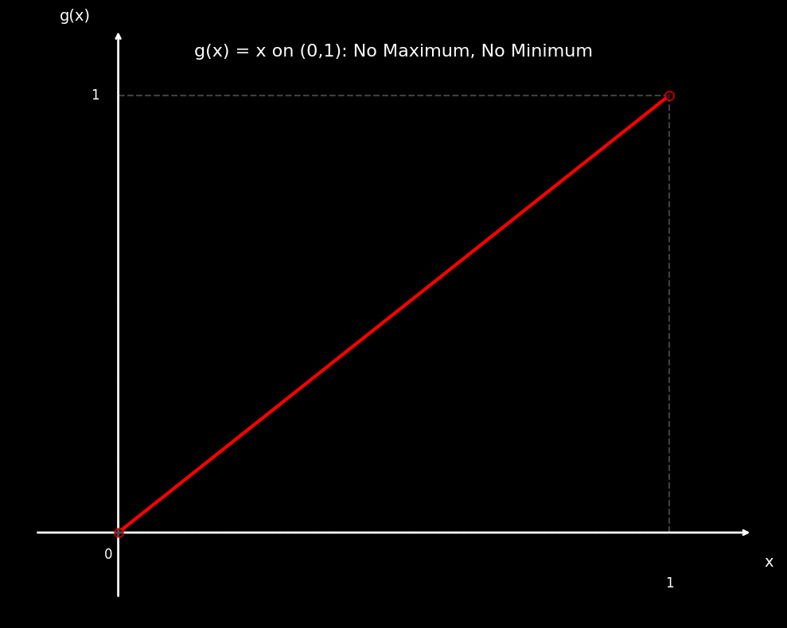

Chapter 7 Appedicses
import numpy as np
import matplotlib.pyplot as plt
plt.style.use('dark_background')
# Create figure and axis
fig, ax = plt.subplots(1, 1, figsize=(10, 8))
# Define x values for the function g(x) = x on open interval (0,1)
x = np.linspace(0.001, 0.999, 1000)
y = x # g(x) = x
# Plot the main line g(x) = x
ax.plot(x, y, 'red', linewidth=3, label='g(x) = x')
# Add lines to show the bounded region (0,1) × (0,1)
ax.plot([0, 0], [0, 1], color='gray', linestyle='--', alpha=0.5) # Left boundary
ax.plot([1, 1], [0, 1], color='gray', linestyle='--', alpha=0.5) # Right boundary
ax.plot([0, 1], [1, 1], color='gray', linestyle='--', alpha=0.5) # Top boundary
ax.plot([0, 1], [0, 0], color='gray', linestyle='--', alpha=0.5) # Bottom boundary
# Plot open circles at the endpoints to show they're not included
ax.plot(0, 0, 'wo', markersize=8, markerfacecolor='black', markeredgecolor='red',
markeredgewidth=1.5, zorder=4, alpha=0.7)
ax.plot(1, 1, 'wo', markersize=8, markerfacecolor='black', markeredgecolor='red',
markeredgewidth=1.5, zorder=4, alpha=0.7)
# Set up the axes
ax.set_xlim(-0.2, 1.2)
ax.set_ylim(-0.2, 1.2)
# Remove all spines
ax.spines['left'].set_visible(False)
ax.spines['bottom'].set_visible(False)
ax.spines['right'].set_visible(False)
ax.spines['top'].set_visible(False)
# Remove axis ticks and labels
ax.set_xticks([])
ax.set_yticks([])
# Add custom axis arrows
ax.annotate('', xy=(1.15, 0), xytext=(-0.15, 0),
arrowprops=dict(arrowstyle='->', color='white', lw=2))
ax.annotate('', xy=(0, 1.15), xytext=(0, -0.15),
arrowprops=dict(arrowstyle='->', color='white', lw=2))
# Add axis labels
ax.text(1.18, -0.05, 'x', fontsize=14, color='white', ha='center', va='top')
ax.text(-0.05, 1.18, 'g(x)', fontsize=14, color='white', ha='right', va='center')
# Add 0 and 1 markings on both axes
# ax.plot([-0.03, 0.03], [0, 0], 'white', linewidth=2)
# ax.plot([0, 0], [-0.03, 0.03], 'white', linewidth=2)
ax.text(-0.01, -0.05, '0', fontsize=12, color='white', ha='right', va='center')
# ax.text(0, -0.1, '0', fontsize=12, color='white', ha='center', va='top')
# ax.plot([0.97, 1.03], [1, 1], 'white', linewidth=2)
# ax.plot([1, 1], [0.97, 1.03], 'white', linewidth=2)
ax.text(-0.05, 1, '1', fontsize=12, color='white', ha='left', va='center')
ax.text(1, -0.1, '1', fontsize=12, color='white', ha='center', va='top')
# Add title
ax.text(0.5, 1.1, 'g(x) = x on (0,1): No Maximum, No Minimum',
ha='center', va='center', fontsize=16, color='white')
plt.tight_layout()
plt.show()